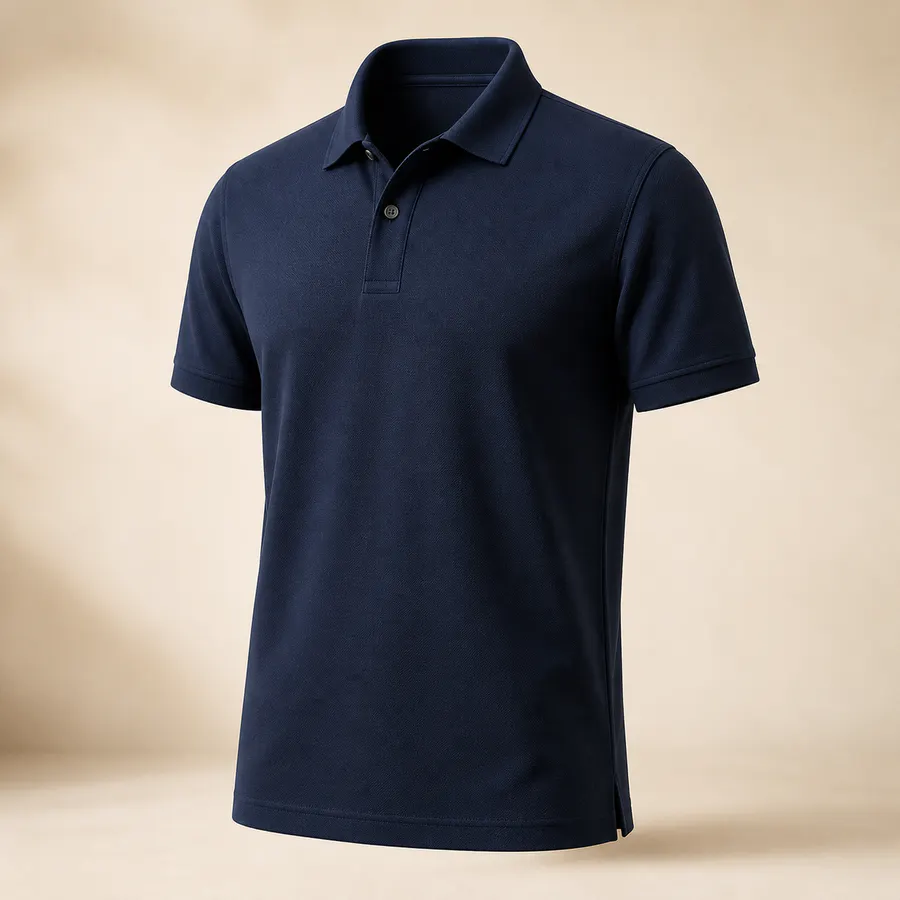
KURUMSAL İŞ KIYAFETLERİ
İşletmenize Özel İş Elbiseleri
Polo yaka, tişört, önlük, pantolon ve şapka üretimi. Baskı ve nakış seçenekleriyle doğrudan üreticiden.
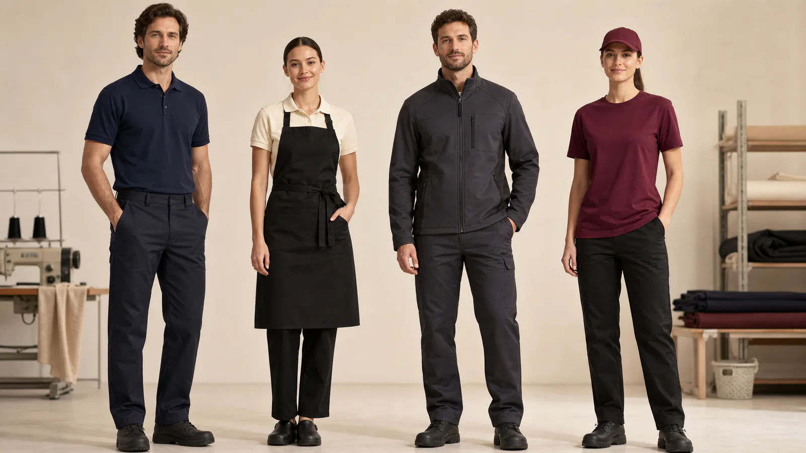
EKİBİNİZ, KİMLİĞİNİZ
İşletmenizin Kimliğini Çalışanlarınıza Taşıyoruz.
Kaliteli kumaş, modern tasarım ve işletmenize özel üretim seçenekleriyle ekiplerinizin konforunu ve profesyonel görünümünü bir araya getiriyoruz.
KURUMSAL KOLEKSİYON
Ürün Grupları
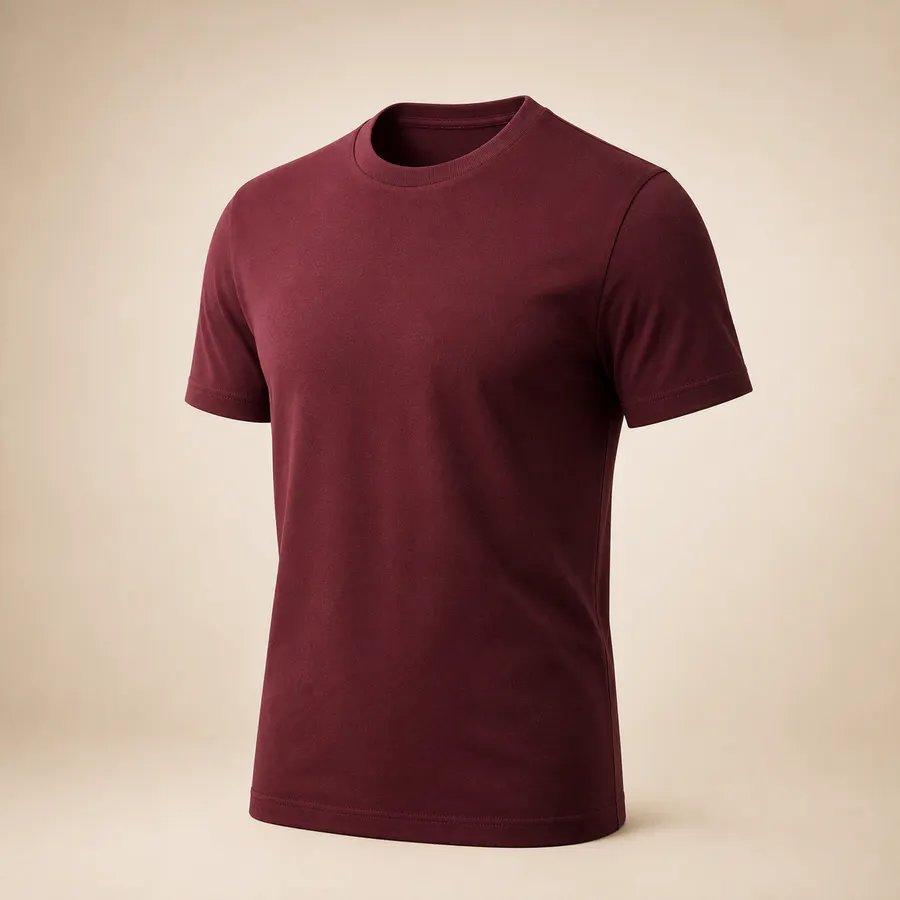
Sıfır Yaka
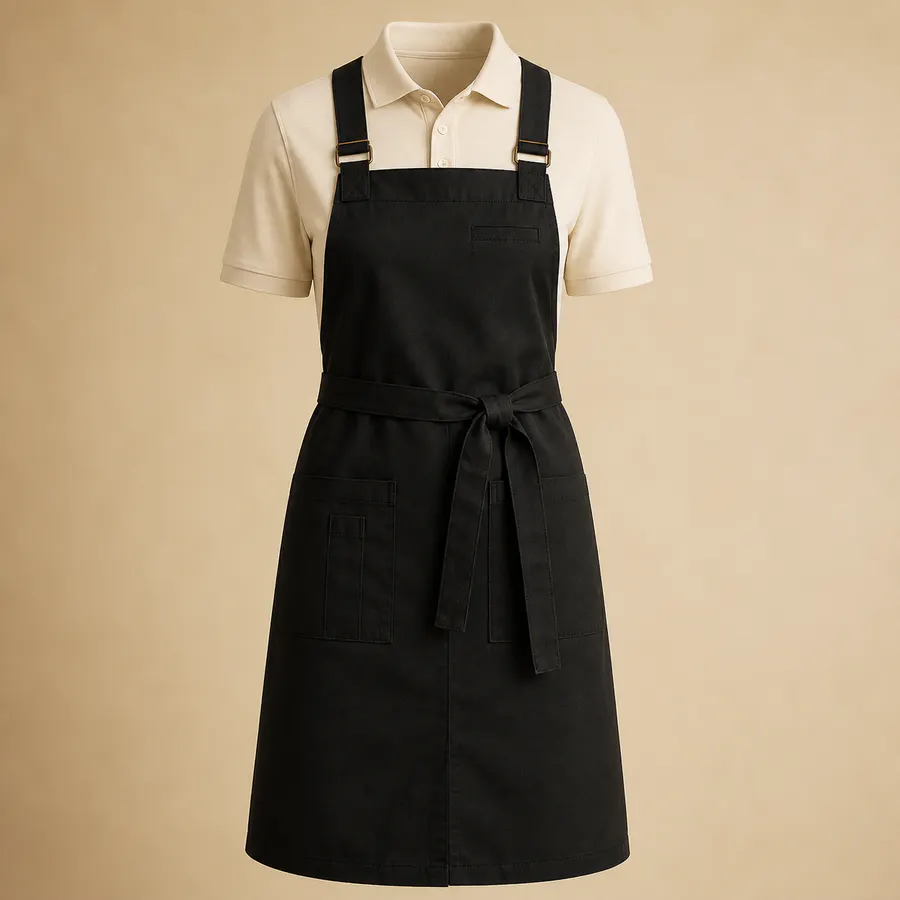
İş Önlükleri
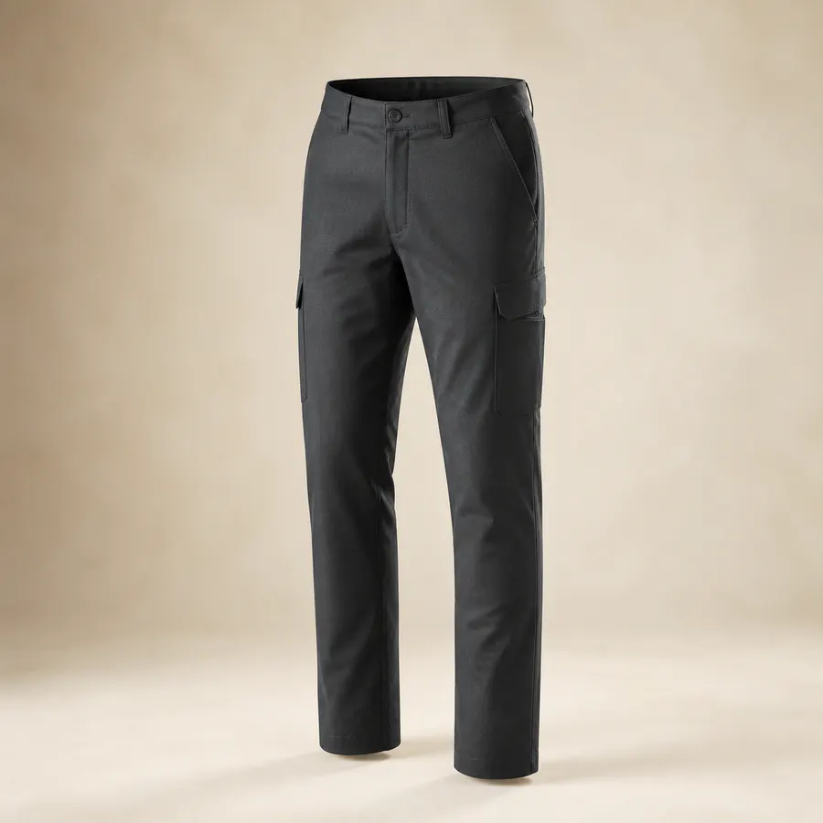
İş Pantolonları
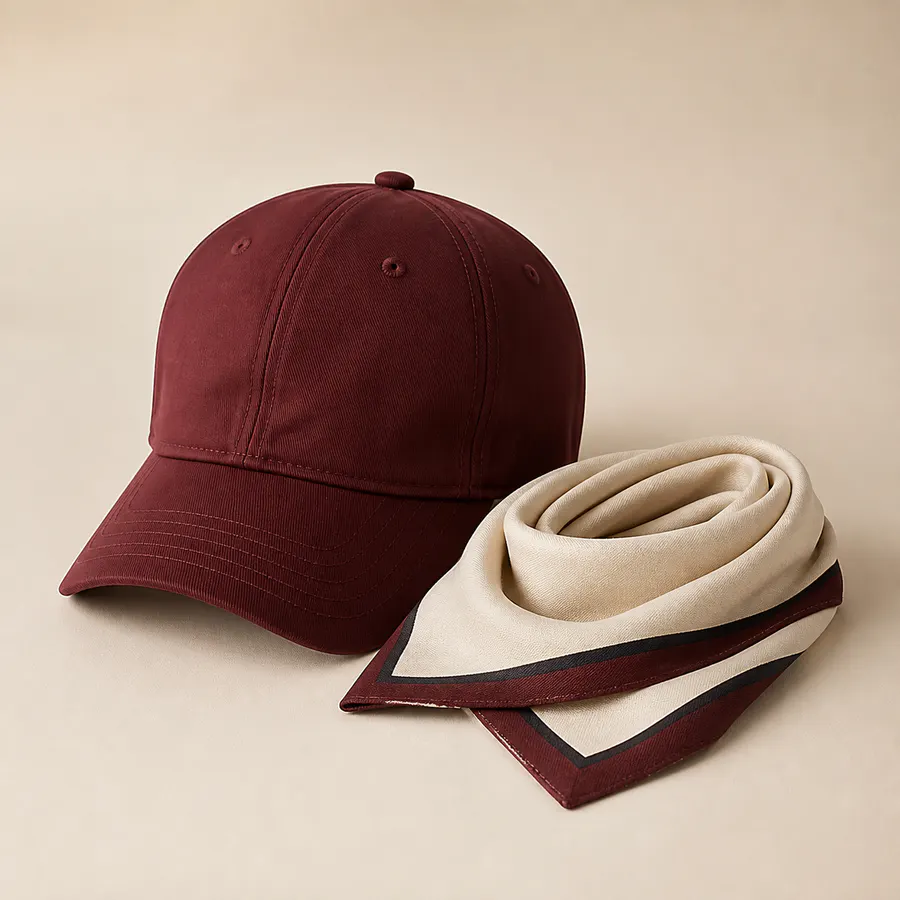
Şapka ve Aksesuarlar
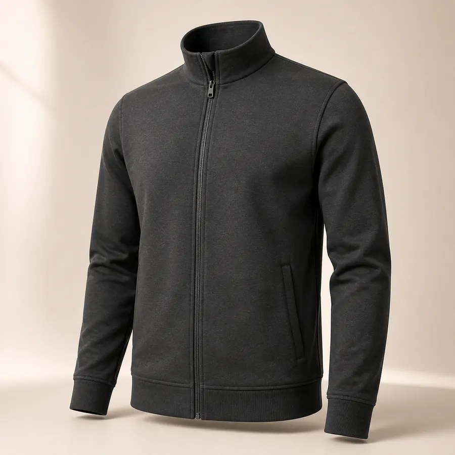
Sweatshirt ve Üst Giyim
MARKANIZA ÖZEL
Markanız İş Kıyafetlerinin Üzerinde
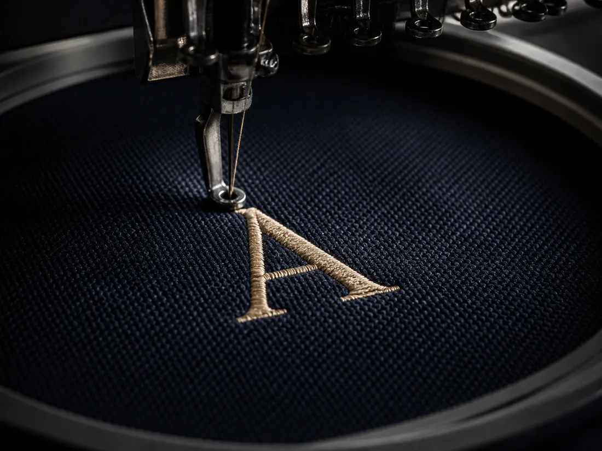
01
Nakış
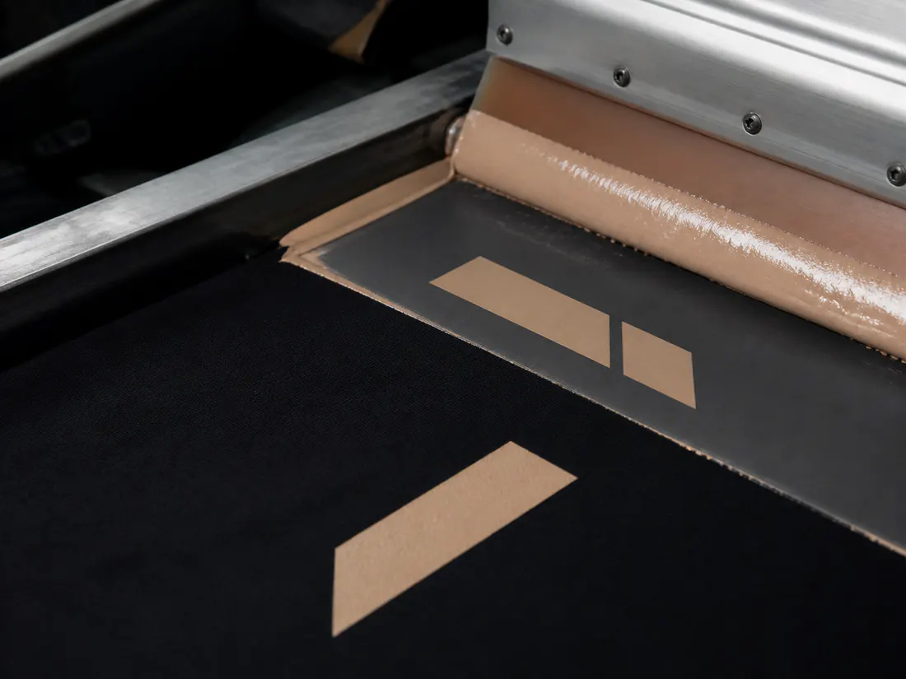
02
Baskı
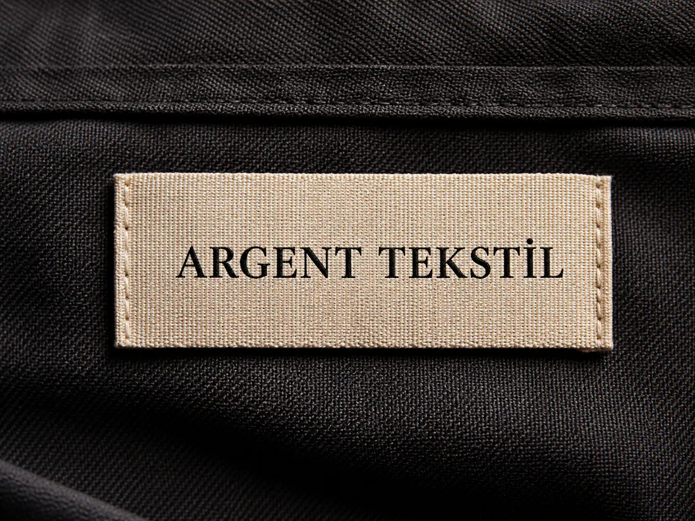
03
Özel Etiket
ÇALIŞMA ALANLARI
Her Sektöre Uygun Çözümler
Restoran ve Kafe
Otel ve Turizm
Fabrika ve Üretim
Mağaza ve Perakende
Lojistik ve Depo
Saha Ekipleri
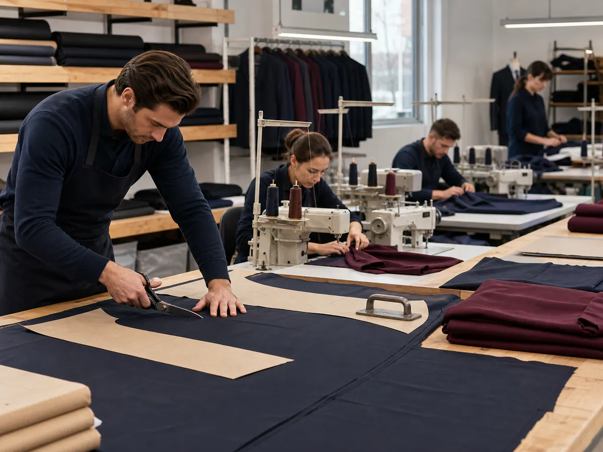
ÜRETİCİDEN İŞLETMENİZE
Aracısız, Doğrudan Üretim
Üretim sürecinin her aşamasını aynı kalite anlayışıyla planlıyor, işletmenize uygun ürünleri doğrudan hazırlıyoruz.
- Üreticiden doğrudan fiyat
- İşletmeye özel üretim
- Kontrollü kalite
- Baskı ve nakış dâhil
PLANLI ÜRETİM
İhtiyaçtan Teslimata
01
İhtiyaç
02
Model & Kumaş
03
Logo
04
Numune
05
Üretim
06
Teslimat
BİRLİKTE PLANLAYALIM
İşletmeniz İçin Üretimi Planlayalım
İhtiyacınız olan ürünleri, yaklaşık adetleri ve logo uygulamasını bizimle paylaşın. İşletmenize özel üretim seçeneklerini birlikte belirleyelim.